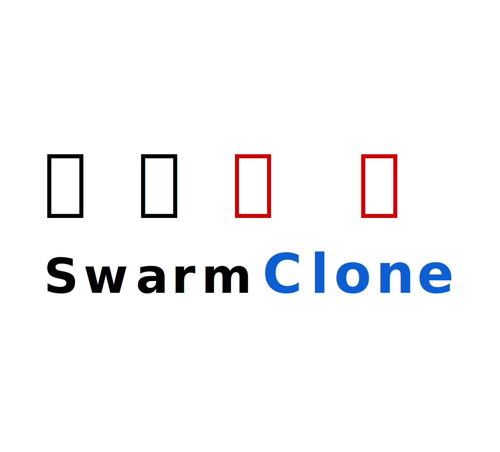

<!-- sidebar.html -->
<div class="ui vertical menu">
    <div class="header-container">
        
        <h3 class="nav_title_text">蜂群克隆-控制面板</h3>
    </div>
    <div class="item">
        <div class="header">主页</div>
        <div class="menu">
            <a class="item" id="nav-home" href="index.html">启动</a>
        </div>
    </div>
    <div class="item">
        <div class="header">操作</div>
        <div class="menu">
            <a class="item" id="nav-op1" href="op1.html">子项1</a>
            <a class="item" id="nav-op2" href="opt2.html">子项2</a>
            <a class="item" id="nav-op3" href="opt3.html">子项3</a>
            <a class="item" id="nav-op4" href="opt4.html">子项4</a>
        </div>
    </div>
    <div class="item">
        <div class="header">直播</div>
        <div class="menu">
            <a class="item" id="nav-live1" href="live1.html">子项1</a>
            <a class="item" id="nav-live2" href="live2.html">子项2</a>
            <a class="item" id="nav-live3" href="live3.html">子项3</a>
            <a class="item" id="nav-live4" href="live4.html">子项4</a>
        </div>
    </div>
    <div class="item">
        <div class="header">设置</div>
        <div class="menu">
            <a class="item" id="nav-set-llm" href="set-llm.html">LLM</a>
            <a class="item" id="nav-set-asr" href="set-asr.html">ASR</a>
            <a class="item" id="nav-set-tts" href="set-tts.html">TTS</a>
            <a class="item" id="nav-set-unity" href="set-unity.html">Unity Frontend</a>
            <a class="item" id="nav-set-obs" href="set-obs.html">OBS</a>
        </div>
    </div>
    <div class="item">
        <div class="header">关于</div>
        <div class="menu">
            <a class="item" id="nav-about-project" href="ab_project.html">此项目</a>
            <a class="item" id="nav-about-credits" href="ab_credits.html">鸣谢</a>
        </div>
    </div>
</div>